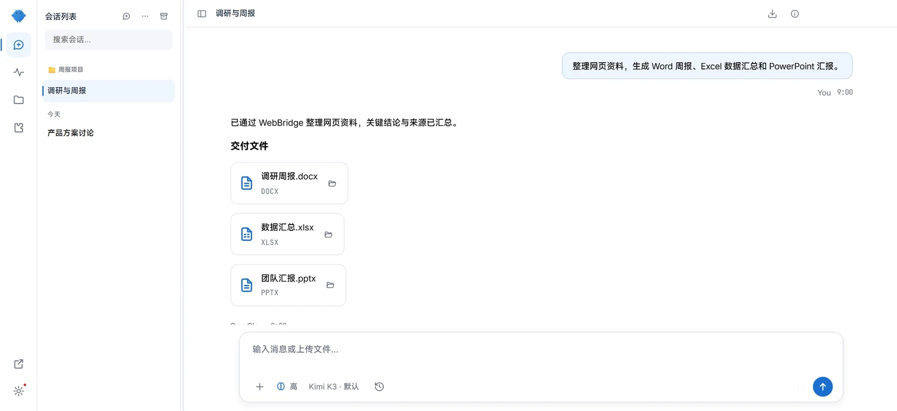
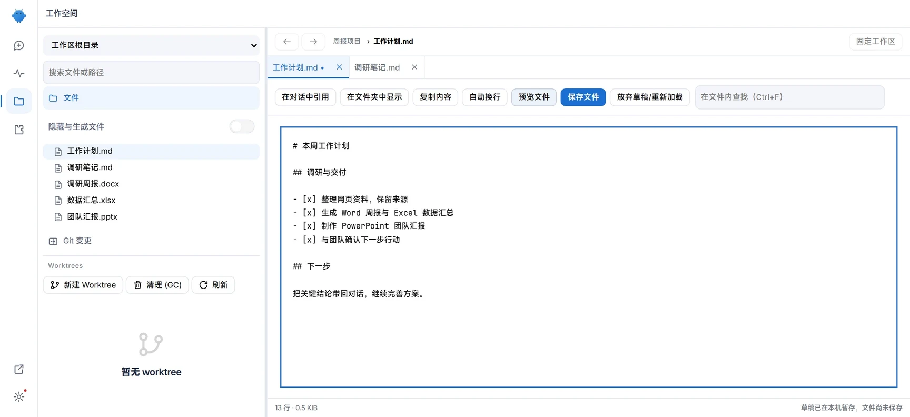
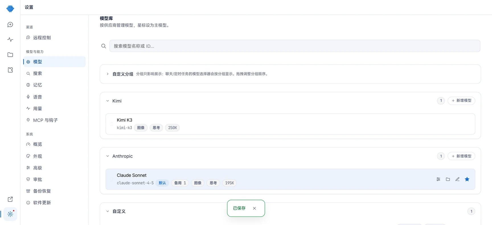
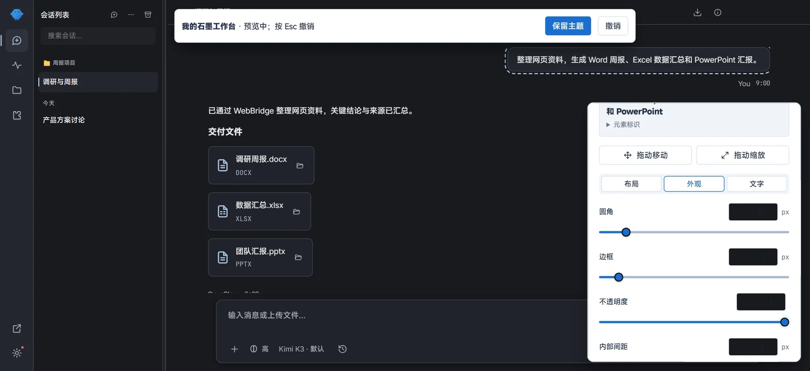

浏览器，接着用。
启用 WebBridge 扩展后，读取网页、点击和填写，衔接你常用浏览器里的登录状态。
网页调研 · 资料整理 · 表单处理你的模型。你的文件。你的工作方式。
让 AI 走进你的浏览器、文档和本地工作空间。
从整理资料到交付文件，在一个桌面工作台里接着做。
Windows 10 / 11 · x64 无需另装 Node.js 或 npm
把这几页资料，整理成下周的汇报。
资料已整理，来源已保留。
这是你的下一份汇报。功能示意 · 非运行中的任务查看真实界面 ↗
安装即用运行环境已备好
模型自选连接自己的服务
本地工作空间文件就在手边
开源可查AGPL-3.0
少一点切换，多一点完成
对话、模型、文件和主题共享一个工作台。
熟悉的位置，顺手的操作，按你的习惯展开。
用内置 Office 技能读写 Word、Excel、PowerPoint，生成的文件留在本地，接着查看、修改或分享。
Word / Excel / PowerPoint
搜索、预览、编辑本地文本，多标签继续工作。草稿自动暂存，Git 差异与 worktree 管理让改动有迹可循。
文件预览 / 草稿备份 / Git 差异
按服务商管理模型，搜索、分组、设为默认。配置备用链，调整模型支持的思考强度，也能连接本地模型。
自带 API Key / 兼容接口 / Ollama
配色、字体、间距与组件外观均可微调。浅色与深色成对预览，主题包支持导入、导出。
默认 / 冰川 / 石墨 / 苔原 / 自定义
来自 CryoClaw 软件界面 · 示例数据在自己的电脑上试试 ↗
一张桌面，接上日常
先连接模型，再按需启用能力。
从第一件小事开始，慢慢接通自己的工作流。
启用 WebBridge 扩展后，读取网页、点击和填写，衔接你常用浏览器里的登录状态。
网页调研 · 资料整理 · 表单处理内置 Word、Excel、PowerPoint 技能和 OfficeCLI。把资料变成文档，把数据整理成表格。
周报 · 数据汇总 · 团队汇报按平台流程连接飞书、企业微信、钉钉、QQ Bot 或微信，在日常聊天入口与 AI 交互。
飞书 · 企业微信 · 钉钉 · QQ · 微信请求批准、智能审批、完全同意，按任务选择执行权限。密钥保存在本机，模型请求发往所选服务商。
权限选择 · 本地配置 · 备份恢复通过 ClawHub 发现和安装技能、插件，在图形界面管理工具，让工作台随任务扩展。
技能市场 · 插件管理 · 可扩展应用差分更新，内核独立升级。内核健康检查失败自动回滚，配置支持备份与恢复。
差分更新 · 健康检查 · 配置备份模型由你选择支持兼容接口与本地模型
开始，不必先搭环境
运行环境在安装包里。
准备好自己的模型服务，即可开始。
下载 Windows x64 安装包，按向导完成安装。无需准备开发工具。
在引导中配置模型服务或支持的登录方式。模型服务费用由服务商收取。
先整理一份资料或修改一个文档。浏览器扩展、消息渠道与技能按需启用。
Windows 10 / 11 · x64 安装包
本站下载通道 · 支持断点续传
备用镜像由 gh-proxy.com 提供；若当前线路较慢，可手动切换。
在 PowerShell 中运行以下命令，并将结果与下方校验值比对：
Get-FileHash .\CryoClaw-Setup-2026.1019.0-x64.exe -Algorithm SHA2566eb1c03ff1b0875b7316a35ed0117e27fdec6960c2e587296f48cdc6341dc143不需要。CryoClaw 安装包已经内置 Node.js 运行时和 OpenClaw 内核。完成安装后，按引导连接模型服务即可。
CryoClaw 以 AGPL-3.0 协议开源。你需要使用自己的模型服务或本地模型；云端模型的用量、价格和订阅由对应服务商决定。
本页当前提供已发布的 Windows x64 安装包。其他平台请以 GitHub Releases 中实际提供的文件为准，不要将 x64 安装包当作 ARM 原生版本。
优先使用本站下载通道，中断后可用支持断点续传的下载器继续。也可切换到 GitHub 原始文件或国内备用镜像；安装前可在上方展开 SHA-256 校验信息。
工作空间与配置保存在本机。使用云端模型时，对话及任务需要的内容会发往你选择的服务商；浏览器、插件和消息渠道按各自的配置与权限运行。